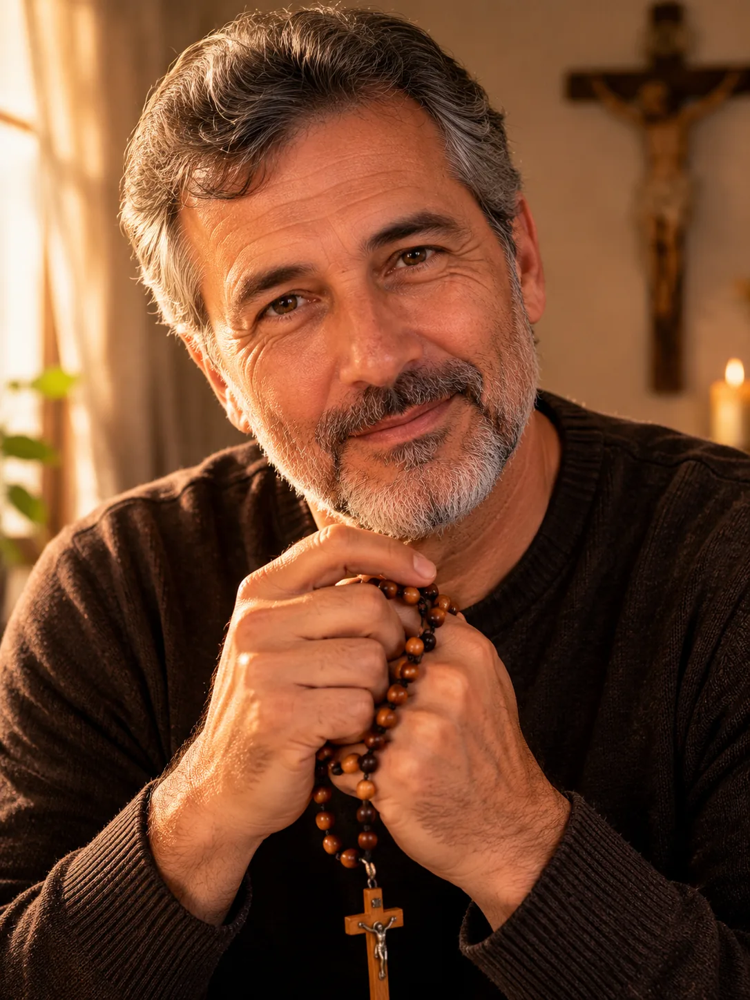
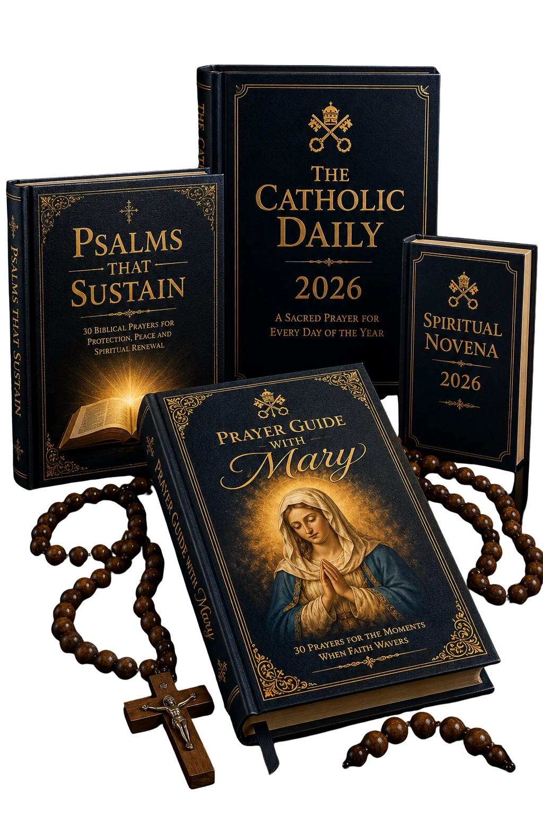
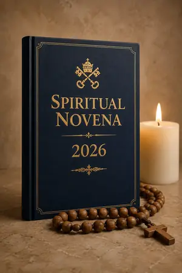
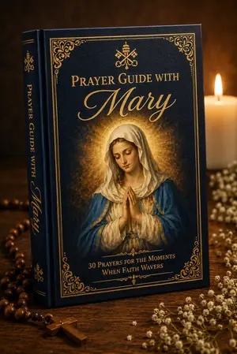
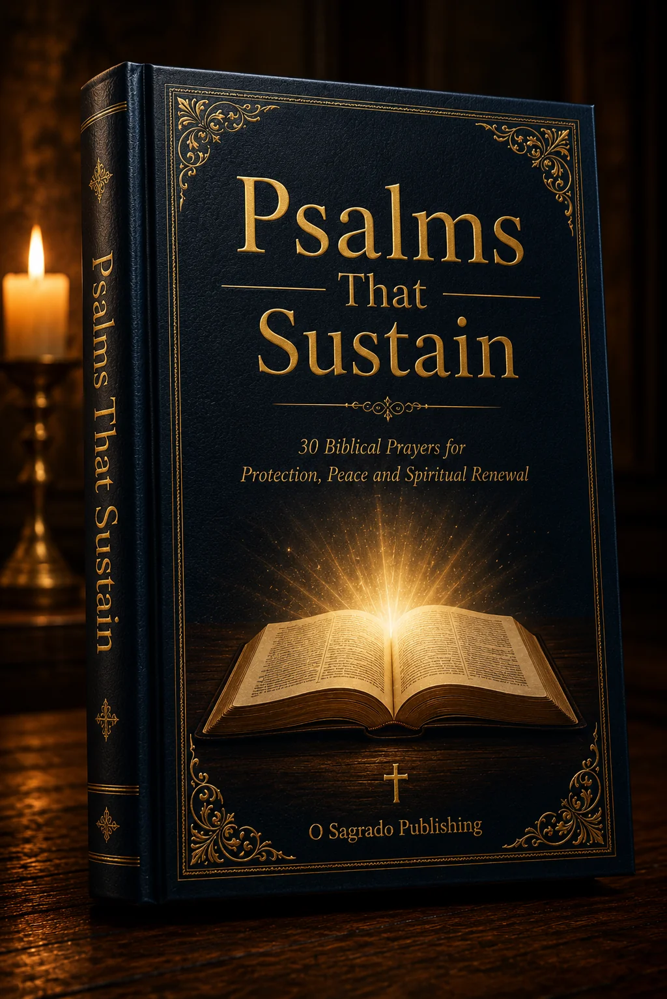
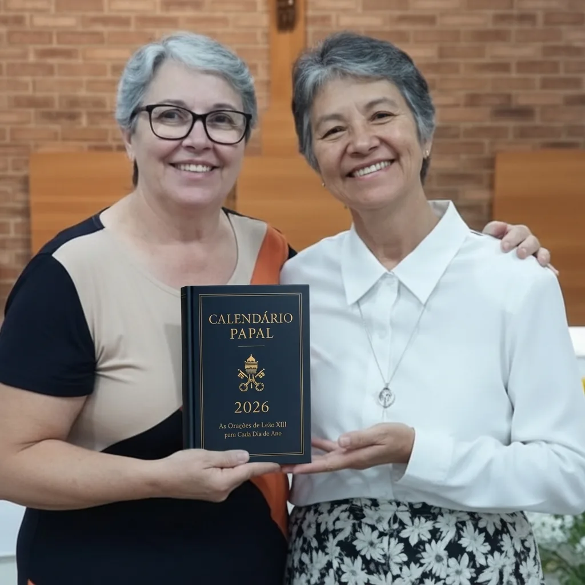
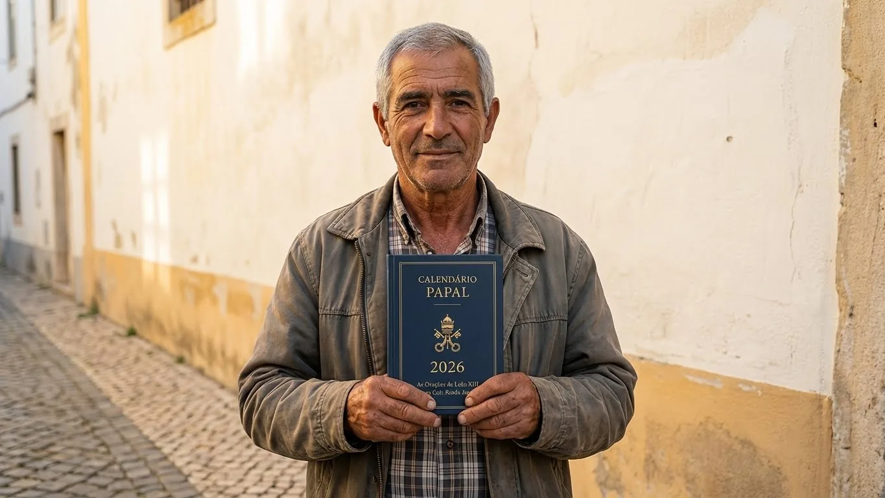

Get closer to God through daily prayer
2-minute quiz · Discover your personalized spiritual plan

What is your age range?
We'll personalize your Calendar for your stage of life.
We're glad you're here.
In the next few minutes, we'll map your spiritual journey and build your The Catholic Daily 2026: a daily prayer plan chosen specifically for who you are and where you are in your faith.
You're doing great.
Based on what you've shared, we're beginning to understand where you are on your faith journey.
The next questions will look at your daily spiritual practices: your prayer life, your connection to the Church, and your relationship with the Pope's teachings.
Just a few more questions.
Now we'll understand what's holding you back from the spiritual life you truly want, and what would genuinely help you grow.
Be honest. This is for you.
Select up to 3, then tap Continue
Here is your
Spiritual Growth Profile
You are on a genuine path, drawn toward God, but sometimes pulled back by the demands of everyday life.
We respect your privacy. Your information is used only to deliver your spiritual plan and will never be sold. Privacy Policy.
Your Spiritual Plan is Ready

A daily prayer routine organized for every day of 2026 to help you live with more faith, peace and clarity.
What's inside The Catholic Daily 2026:
🎁 Also included: 3 free spiritual bonuses

9 days of simple, brief and profound prayer to return to God's presence and walk through the year with more awareness and serenity. Not a restart. A homecoming.

30 prayers with Our Lady for the concrete difficult moments: grief, anxiety, spiritual fatigue, feeling abandoned. Short, practical, for any moment of the day.

30 Psalms organized by need (protection, peace, health, family, trust) so you always know exactly which one to pray in the right moment.
What Catholics are saying:


If within 7 days you don't feel closer to God, we'll refund 100% of your investment. No questions asked.